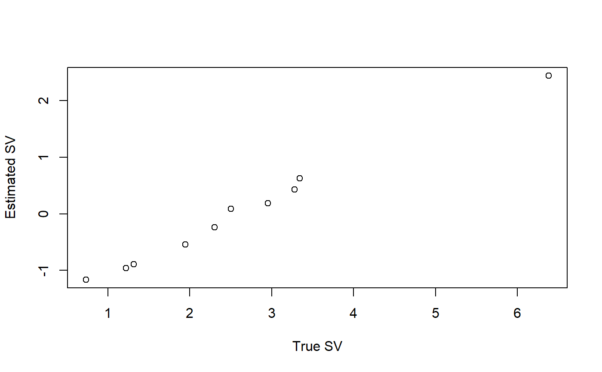
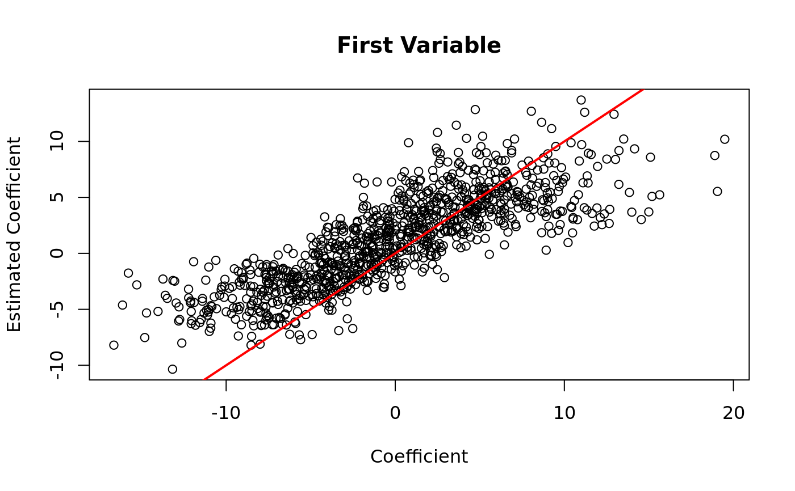
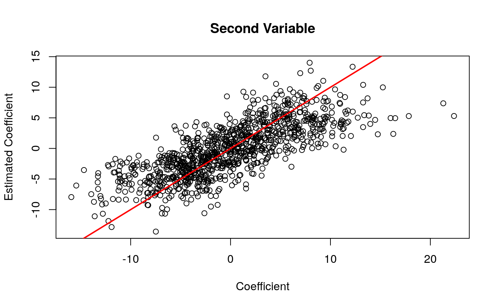
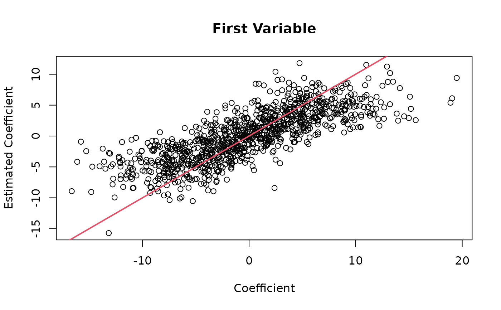
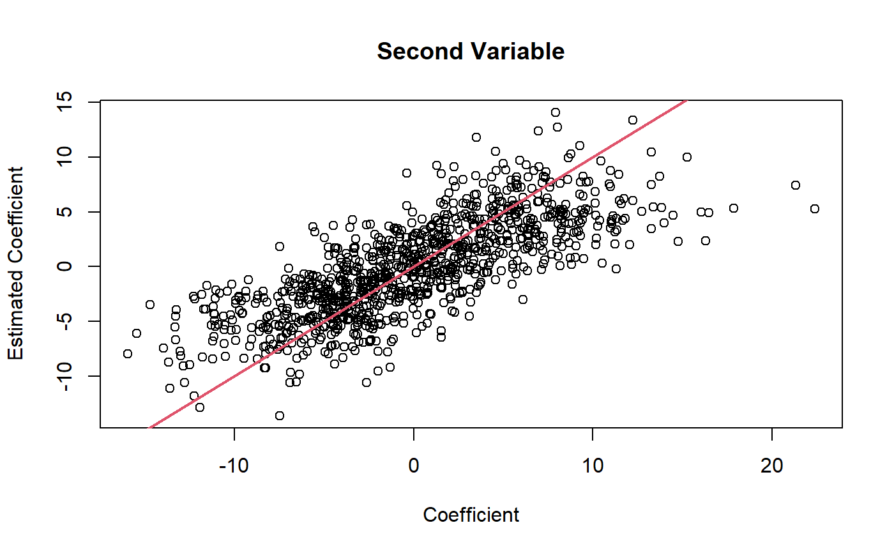

Given a matrix of real RNA-seq counts, this function will add a known amount of signal to the count matrix. This signal is given in the form of a Poisson / negative binomial / mixture of negative binomials generalized linear model with a log (base 2) link. The user may specify any arbitrary design matrix and coefficient matrix. The user may also control for the amount of correlation between the observed covariates and any unobserved surrogate variables.
thin_diff(mat, design_fixed = NULL, coef_fixed = NULL, design_perm = NULL, coef_perm = NULL, target_cor = NULL, use_sva = FALSE, design_obs = NULL, relative = TRUE, change_colnames = TRUE, permute_method = c("optmatch", "hungarian", "marriage"))
| mat | A numeric matrix of RNA-seq counts. The rows index the genes and the columns index the samples. |
|---|---|
| design_fixed | A numeric design matrix whose rows are fixed and not to be permuted. The rows index the samples and the columns index the variables. The intercept should not be included (though see Section "Unestimable Components"). |
| coef_fixed | A numeric matrix. The coefficients corresponding to
|
| design_perm | A numeric design matrix whose rows are to be permuted (thus controlling the amount by which they are correlated with the surrogate variables). The rows index the samples and the columns index the variables. The intercept should not be included (though see Section "Unestimable Components"). |
| coef_perm | A numeric matrix. The coefficients corresponding to
|
| target_cor | A numeric matrix of target correlations between the
variables in |
| use_sva | A logical. Should we use surrogate variable analysis
(Leek and Storey, 2008) using |
| design_obs | A numeric matrix of observed covariates that are NOT to
be a part of the signal generating process. Only used in estimating the
surrogate variables (if |
| relative | A logical. Should we apply relative thinning ( |
| change_colnames | A logical. Should we change the column-names
of the design matrices ( |
| permute_method | Should we use the optimal matching technique from Hansen and
Klopfer (2006) ( |
A list-like S3 object of class ThinData.
Components include some or all of the following:
matThe modified matrix of counts.
designmatThe design matrix of variables used to simulate
signal. This is made by column-binding design_fixed and the
permuted version of design_perm.
coefmatA matrix of coefficients corresponding to
designmat.
design_obsAdditional variables that should be included in
your design matrix in downstream fittings. This is made by
column-binding the vector of 1's with design_obs.
svA matrix of estimated surrogate variables. In simulation studies you would probably leave this out and estimate your own surrogate variables.
cormatA matrix of target correlations between the
surrogate variables and the permuted variables in the design matrix.
This might be different from the target_cor you input because
we pass it through fix_cor to ensure
positive semi-definiteness of the resulting covariance matrix.
matching_varA matrix of simulated variables used to
permute design_perm if the target_cor is not
NULL.
Let
Be the number of samples.
Be the number of genes.
Be an \(G\) by \(N\) matrix of real RNA-seq counts.
This is mat.
Be an \(N\) by \(P_1\) user-provided design matrix.
This is design_fixed.
Be an \(N\) by \(P_2\) user-provided design matrix.
This is design_perm.
Be an \(N\) by \(P_3\) matrix of known covariates.
This is design_obs.
Be an \(N\) by \(K\) matrix of unobserved surrogate
variables. This is estimated when target_cor is not
NULL.
Be a \(G\) by \(N\) of additional (unknown) unwanted variation.
We assume that \(Y\) is Poisson distributed given \(X_3\) and
\(Z\) such that
$$\log_2(EY) = \mu 1_N' + B_3X_3' + AZ' + M.$$
thin_diff() will take as input \(X_1\), \(X_2\), \(B_1\),
\(B_2\), and will output a \(\tilde{Y}\) and \(W\) such that
\(\tilde{Y}\) is Poisson distributed given \(X_1\), \(X_2\), \(X_3\),
\(W\), \(Z\), and \(M\) such that
$$\log_2(E\tilde{Y}) \approx \tilde{\mu}1_N' + B_1X_1' + B_2X_2'W' + B_3X_3' + AZ' + M,$$
where \(W\) is an \(N\) by \(N\) permutation matrix. \(W\) is randomly
drawn so that \(WX_2\) and \(Z\) are correlated approximately according
to the target correlation matrix.
The Poisson assumption may be generalized to a mixture of negative binomials.
It is possible to include an intercept term or a column from
design_obs into either design_fixed or design_perm.
This will not produce an error and the specified thinning will be applied.
However, If any column of design_fixed or
design_perm is a vector of ones or contains a column from
design_obs, then the corresponding columns in coef_fixed
or coef_perm cannot be estimated by any method. This is
represented in the output by having duplicate columns in
designmat and design_obs.
Including duplicate columns in design_fixed and design_perm
is also allowed but, again, will produce unestimable coefficients.
Including an intercept term in design_obs will produce an error if
you are specifying correlated surrogate variables.
Leek, Jeffrey T., and John D. Storey. "A general framework for multiple testing dependence." Proceedings of the National Academy of Sciences 105, no. 48 (2008): 18718-18723.
Hansen, Ben B., and Stephanie Olsen Klopfer. "Optimal full matching and related designs via network flows." Journal of computational and Graphical Statistics 15, no. 3 (2006): 609-627.
Gale, David, and Lloyd S. Shapley. "College admissions and the stability of marriage." The American Mathematical Monthly 69, no. 1 (1962): 9-15.
C. Papadimitriou and K. Steiglitz (1982), Combinatorial Optimization: Algorithms and Complexity. Englewood Cliffs: Prentice Hall.
Hornik K (2005). "A CLUE for CLUster Ensembles." Journal of Statistical Software, 14(12). doi: 10.18637/jss.v014.i12
select_countsFor subsampling the rows and columns of your real RNA-seq count matrix prior to applying binomial thinning.
thin_2groupFor the specific application of
thin_diff to the two-group model.
thin_libFor the specific application of
thin_diff to library size thinning.
thin_geneFor the specific application of
thin_diff to total gene expression thinning.
thin_allFor the specific application of
thin_diff to thinning all counts uniformly.
thin_baseFor the underlying thinning function
used in thin_diff.
svaFor the implementation of surrogate variable analysis.
ThinDataToSummarizedExperimentFor converting a ThinData object to a SummarizedExperiment object.
ThinDataToDESeqDataSetFor converting a ThinData object to a DESeqDataSet object.
## Generate simulated data with surrogate variables ## In practice, you would obtain mat from a real dataset, not simulate it. set.seed(1) n <- 10 p <- 1000 Z <- matrix(abs(rnorm(n, sd = 4))) alpha <- matrix(abs(rnorm(p, sd = 1))) mat <- round(2^(alpha %*% t(Z) + abs(matrix(rnorm(n * p, sd = 5), nrow = p, ncol = n)))) ## Choose simulation parameters design_perm <- cbind(rep(c(0, 1), length.out = n), runif(n)) coef_perm <- matrix(rnorm(p * ncol(design_perm), sd = 6), nrow = p) ## Specify one surrogate variable (number of columns in taget_cor), ## highly correlated with first observed covariate and uncorrelated ## with second observed covariate target_cor <- matrix(c(0.9, 0)) ## Thin thout <- thin_diff(mat = mat, design_perm = design_perm, coef_perm = coef_perm, target_cor = target_cor) ## target_cor approximates correlation between estimated surrogate variable ## and matching variable. cor(thout$matching_var, thout$sv)#> [,1] #> [1,] 0.92652364 #> [2,] 0.08621485## Estimated surrogate variable is associated with true surrogate variable ## (because the signal is strong in this case) plot(Z, thout$sv, xlab = "True SV", ylab = "Estimated SV")## So target_cor approximates correlation between surrogate variable and ## matching variables cor(thout$matching_var, Z)#> [,1] #> [1,] 0.91827513 #> [2,] 0.08834679## Correlation between permuted covariates and surrogate variables are less ## close to target_cor cor(thout$designmat, Z)#> [,1] #> P1 0.5890975 #> P2 -0.2183653## Estimated signal is correlated to true single. First variable is slightly ## biased because the surrogate variable is not included. Ynew <- log2(t(thout$mat) + 0.5) X <- thout$designmat coef_est <- t(coef(lm(Ynew ~ X))[2:3, ]) plot(thout$coefmat[, 1], coef_est[, 1], main = "First Variable", xlab = "Coefficient", ylab = "Estimated Coefficient")plot(thout$coefmat[, 2], coef_est[, 2], main = "Second Variable", xlab = "Coefficient", ylab = "Estimated Coefficient")## But estimated coefficient of the first variable is slightly closer when ## the surrogate variable is included. Ynew <- log2(t(thout$mat) + 0.5) X <- cbind(thout$designmat, thout$sv) coef_est <- t(coef(lm(Ynew ~ X))[2:3, ]) plot(thout$coefmat[, 1], coef_est[, 1], main = "First Variable", xlab = "Coefficient", ylab = "Estimated Coefficient")plot(thout$coefmat[, 2], coef_est[, 2], main = "Second Variable", xlab = "Coefficient", ylab = "Estimated Coefficient")